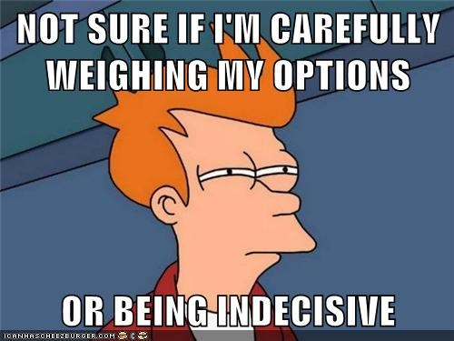

George Boole was a British mathematician born in 1815
Devised a system of logic that aimed to condense complex thoughts into simple equations
In Mathematics, algebra deals with finding the numeric value of a statement composed with variables that represent numbers
Boolean algebra deals with determining the truth of a statement with true or false variables
The Boolean logic (1854) laid the foundations for the digital revolution and paved the way for the computer age
Boolean Logic
Three logic operators - AND, OR and NOT
Operands defined by a set of two possible values - true/false, on/off, 1/0
AND used to narrow the possible set of values capable of making a logic statement true
OR broadens the possible set of values capable of making a logic statement true
NOT excludes values from the possible set of values capable of making a logic statement true
In a logic statement, NOT is evaluated first, AND is next and OR is last
{ Board Exercise }
Please stand up if the following logic statements are true:
girl AND brown hair AND left handed
girl OR brown hair OR left handed
girl AND NOT brown hair
{ Board Exercise }
Draw the truth tables for boolean operators
{ Exercise }
The Kitten Breeder
A real life problem
Let's imagine a cat breeder with very specific needs
There are all kinds of cats, but the options can be narrowed to:
Male, or Female
White, Black, Tan, or Other
and finally, Adults or Kitties

Very specific needs
Everytime the breeder walks into a pet store he will ask:
I want a male kitty, either white or tan; or maybe a female kitty, any color but white; but I'll also settle for any cat you have as long as it’s black.
For a regular clerk this would be a nightmarish request.
But not for a boolean algebra expert!
Can you write down the expression representing this customer's wishes?
Transistor Switches
With two transistors a simple NAND gate can be implemented
The NAND gate is important because any boolean function can be implemented by using a combination of NAND gates
One single IC (integrated circuit) can contain millions of transistors/logic gates
Logic Gates
Device implementing a Boolean logical operation on one or more binary inputs and producing a single binary output
Relays (electromagnets), valves (vacuum tubes), or transistors can be used to implement logic gates
{ Board Exercise }
Build logic gates using only NAND gates
Digital Circuits
Logic Gates can be combined to produce complex circuits and logic
This is a full 1-bit adder. Four of these can be put together to form a full 4 bit adder
{ Exercise }
Back to the Kitten Store
Using any Logic Gates, draw the digital circuit that will solve the cat breeder's problem from the previous exercise


 Relays (electromagnets), valves (vacuum tubes), or transistors can be used to implement logic gates
Relays (electromagnets), valves (vacuum tubes), or transistors can be used to implement logic gates